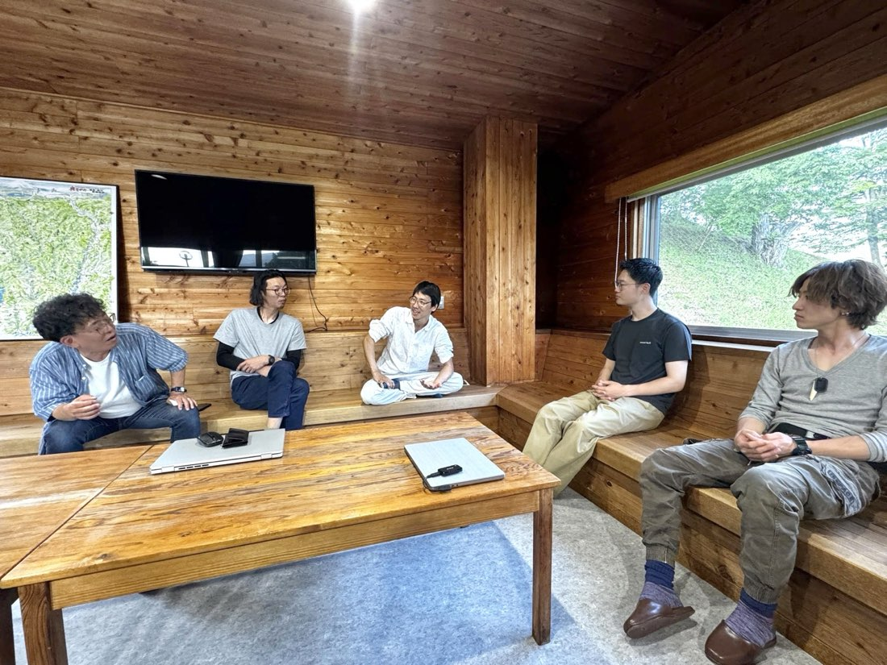
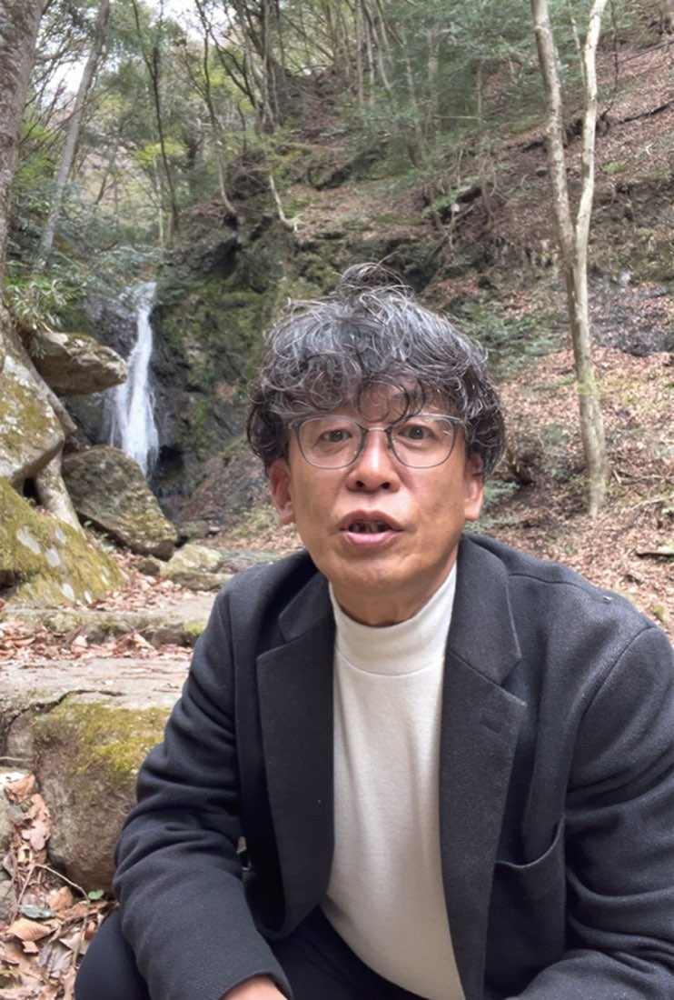
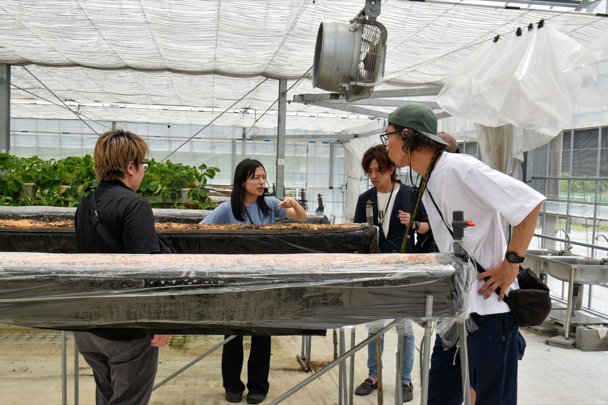
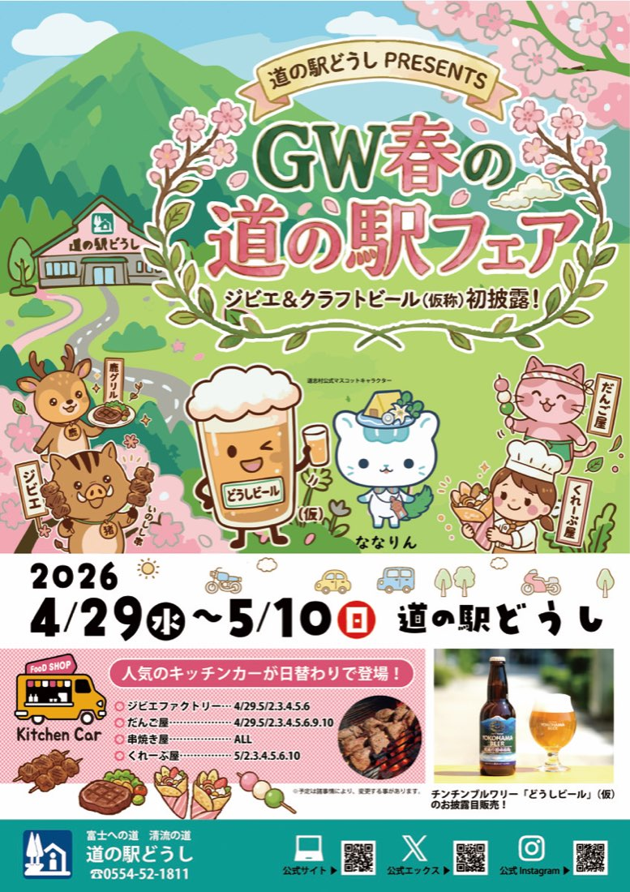

「隠れた魅力」を形にし、
関係人口を増やす新たなコンテンツ開発へ
4月に道志村に着任して以来、日々この村のポテンシャルの高さに圧倒されています。私のミッションは「道志村の隠れた魅力を再発掘し、関係人口を増やす新たなコンテンツを開発すること」です。
村の皆さんにとっては「何もない、いつもの風景」かもしれない、美しい景観、豊かな水源、そしてそこに息づく文化。外からの視点だからこそ気づくことができる、まだ広く知られていない道志の宝が、この村には無数に眠っています。
これらを丁寧に編集し、村外の人々が「何度も訪れたい」「深く関わりたい」と思えるような、新しくも息の長いコンテンツとして発信していくこと。それが私の役割だと考えています。

「持続可能な仕組み」があってこそ、
本当の地域おこしになる
観光や広報という分野において、地域の窓口である観光協会の機能をより良く、より現代に即した形へと改善していくことは急務です。
しかし、地域おこしという大きな観点に立ったとき、私は「流行りのイベントや、目新しいアイデアを何でもかんでも取り入れればいい」とは考えていません。一過性の賑わいで終わってしまっては、本当の意味で地域のためにはならないからです。
何か新しい試みを興すとき、最も重要なのは「どこに責任があり、誰が実務を担うのか」という体制の明確さ。そして「予算の根拠」を冷徹に見極め、「どのようにして自立し、続けていくのか」というビジネスとしての継続性です。
見栄えの良い瞬間風速ではなく、
10年後、20年後の
土壌となる仕組みを。
この「続けていくための仕組み」を泥臭く、しかし精緻に構築して初めて、活動は村に深く根づき、本当の地域おこしとして実を結びます。



1年目はインプット。
2年目の跳躍に向けた土台づくり
この大きな目標に向かうため、私の1年目は「徹底的なインプット期間」と位置づけています。まずは道志村のことを五感で知り尽くすこと。そして、ほかの地域での成功事例を貪欲に学ぶこと。


焦って形だけを取り繕うのではなく、1年目はとにかく学び、土台を固めます。そして2年目以降、蓄えた知識と村の皆様との絆を原動力に、具体的な行動へと一気に起こしていきます。


一歩一歩、しかし着実に。
道志村の未来へ続くバトンを、
一緒に。
道志村の未来へ続くバトンを、ぜひ皆さんと一緒に作らせてください。どうぞよろしくお願いいたします。